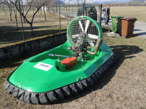
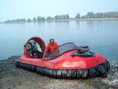
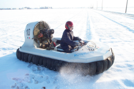
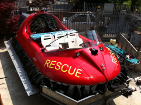
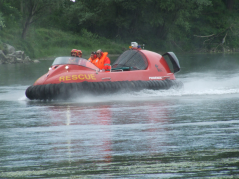
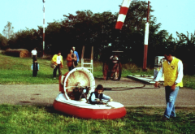
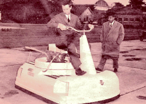
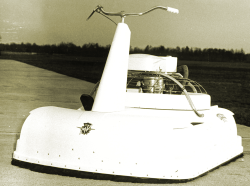

|
Scheda n. 11 |
|
| Denominazione: | Raptor - prototipo |
| Tipo: | Monomotore, monoelica, integrato |
| Costruttore: | ------------ |
| Periodo di costruzione: | 2011 |
| Struttura: | Fiberglass |
| Gonna | Segmentata |
| Motorizzazione: | Rotax 503 senza aria forzata |
| Avviamento: |
a strappo |
| Utilizzo: | Competizione |
| Spinta: | n.d. |
| Carico utile max: | 100 Kg |
| Pressione al cuscino: | n.d. |
| Dimensioni appross.: metri | 3,2 x 1,9 |
| Peso a vuoto: | n.d. |
| Vel. max su acqua: | n.d. |
| Particolarita' costruttive: | - |
| Note: | Probabilmente verra' sostituito da altro esemplare |
| Funzionante | Dimostra fragilita' gravi nella trasmissione |
| Esistenza alla data 2011: | Si |

|
Scheda n. 12 |
|
| Denominazione: | Formula 50 |
| Tipo: | Monomotore, monoelica, integrato |
| Costruttore: | amatoriale, su progetto BB Veicles |
| Periodo di costruzione: | 2010 |
| Struttura: | Fiberglass |
| Gonna | Segmentata |
| Motorizzazione: | Rotax 503 500 cc con ariaforzata - doppio carburatore |
| Avviamento |
a strappo |
| Utilizzo: | Competizione |
| Spinta: | n.d. |
| Carico utile max: | 100 Kg |
| Pressione al cuscino: | n.d. |
| Dimensioni appross.: metri | 3,2 x 1,9 |
| Peso a vuoto: | n.d. |
| Vel. max su acqua: | n.d. |
| Particolarita' costruttive: | - |
| Note: | monoposto |
| Funzionante | Si |
| Esistenza alla data 2011: | Si |

|
Scheda n. 13 |
|
| Denominazione: | Scafo a 3 posti |
| Tipo: | Bimotore, bielica (in origine monomotore integrato) |
| Costruttore: | AG su progetto Bill Backer Vehicles |
| Periodo di costruzione: | 1988 - 1998 |
| Struttura: | Fiberglass |
| Gonna | Segmentata |
| Motorizzazione: |
|
| Avviamento: |
elettrico |
| Utilizzo: | Diporto |
| Spinta statica: | n.d. |
| Carico utile max: | 250 Kg |
| Pressione max al cuscino: | 82 mmH2O |
| Dimensioni appross.: metri | 4,6 x 2,0 |
| Peso a vuoto: | 400 Kg. |
| Vel. max su acqua: | 65 Km/h rilevati con sistema satellitare |
| Particolarita' costruttive: | Date le modestissime performance originali, e' stato
modificato in bimotore dall'Ing. Gianni Marzorati per l'attuale
proprietario. Sono previste ulteriori migliorie. |
| Note: | Owner: silvanoire@tin.it |
| Funzionante | Si |
| Esistenza alla data 2011: | Si |

|
Scheda n. 14 |
|
| Denominazione: | Kestrel - monoposto - modificato |
| Tipo: | Monomotore, monoelica, integrato |
| Costruttore: | Osprey Hovercraft Ltd (GB) |
| Periodo di costruzione: | 1980 - 1990 |
| Struttura: | Fiberglass |
| Gonna | Segmentata |
| Motorizzazione: | Rotax 503 - 500 cc. 45Hp monocarburatore |
| Avviamento: |
a strappo |
| Utilizzo: | Diporto sportivo |
| Spinta statica: | 55 Kg.circa |
| Carico utile max: | 90 Kg |
| Pressione max al cuscino: | 45 mmH2O |
| Dimensioni appross.: metri | 3,2 x 1,8 |
| Peso a vuoto: | 130 Kg. |
| Vel. max su acqua: | circa 60 Km/h |
| Particolarita' costruttive: | Trasmissione alla ventola con scatola di riduzione |
| Note: | Avviamento a strappo |
| Funzionante | Si |
| Esistenza alla data 2011: | Si |


|
Scheda n. 15 |
|
| Denominazione: | Alfeo “ SIERRA 1” * |
| Tipo: | Monomotore, monoelica, integrato |
| Costruttore: | Phoenix Rescue Systems Srl |
| Periodo di costruzione: | 2007 |
| Struttura: | Fibra carbonio e resina |
| Gonna | Segmentata, neoprene. Sollevamento 30 cm circa |
| Motorizzazione: | Subaru 2000 cc, 4T, 4 cil, fasatura variabile , 165 Hp circa |
| Avviamento |
elettrico |
| Utilizzo: | Soccorso : in servizio presso Phoenix |
| Spinta statica: | 160 Kg. |
| Carico utile max: | 640 Kg |
| Pressione max al cuscino: | 108 mmH2O |
| Dimensioni appross.: metri | 5,40 x 2,45 |
| Peso a vuoto: | 550 Kg. |
| Vel. max su acqua: | 48 nodi |
| Particolarita' costruttive: | Sist. di ripartiz.ne “ Splitter ring” e deflett. telescop.
brevettati |
| Note: | *tutti i dati ci sono stati dichiarati dal costruttore |
| Funzionante | Si |
| Esistenza alla data 2011: | Si |
|
Scheda n. 16 |
|
| Denominazione: | Alfeo “ SIERRA 4” * |
| Tipo: | Monomotore, monoelica, integrato |
| Costruttore: | Phoenix Rescue Systems Srl |
| Periodo di costruzione: | 2011 |
| Struttura: | Fibra carbonio e resina |
| Gonna | Segmentata, neoprene. Sollevamento 30 cm circa |
| Motorizzazione: | FIAT 1400 cc, turbo, 155 Hp |
| Avviamento: |
elettrico |
| Utilizzo: | Soccorso : in servizio presso Phoenix |
| Spinta statica: | 158 Kg. |
| Carico utile max: | 640 Kg |
| Pressione max al cuscino: | 108 mmH2O |
| Dimensioni appross.: metri | 5,40 x 2,45 |
| Peso a vuoto: | 540 Kg. |
| Vel. max su acqua: | 48 nodi |
| Particolarita' costruttive: | trasmissione idraulica |
| Note: | *tutti i dati ci sono stati dichiarati dal costruttore |
| Funzionante | Si |
| Esistenza alla data 2011: | Si |

|
Scheda n. 17 |
|
| Denominazione: | --- |
| Tipo: | Monomotore, monoelica, integrato |
| Costruttore: | sconosciuto, probabilmente Ackerman Industrie (Fr) |
| Periodo di costruzione: | 1990 |
| Struttura: | Compensato marino e VTR |
| Gonna | A sacco |
| Sollevamento |
15 - 20 centimetri circa |
| Motorizzazione: | Monocilindrico 2 tempi, JPX 200 cc |
| Avviamento: |
a strappo |
| Utilizzo: | Addestramento giovanissimi |
| Spinta: | 30 Kg. circa |
| Carico utile max: | 40 Kg |
| Pressione max al cuscino: | 30 mmH2O |
| Dimensioni appross.: metri | 2,00 x 1,30 |
| Peso a vuoto: | 35 Kg. |
| Vel. max su acqua: | ---- |
| Particolarita' costruttive: | Diametro ventola 85 cm - Avviamento a strappo con sivalvola |
| Note: | Completamente anfibio, decolla anche dall’acqua |
| Funzionante | Si |
| Esistenza alla data 2011: | Si |


| Nella foto: il
Conte Corrado Agusta con il Conte Mario Agusta al campo di volo di Cascina Costa |
Hovercraft
Agusta Bell |
|
Scheda n. 18 |
|
| Denominazione: | prototipo |
| Tipo: | Monomotore |
| Costruttore: | Costruzioni aeronautiche Giovanni Agusta - Cascina Costa -
Italia |
| Periodo di costruzione: | 1958 |
| Motorizzazione | Motore
bicilindrico a 2 tempi 300 cc. Cilindri contrapposti - Raffreddamento
as aria - Avviamento elettrico - elica in legno calettata direttamente
sull'asse albero motore |
| Carico utile max. | 100 Kg. |
| Pressione al cuscino |
N.D. |
| Dimensioni appross.: metri | 2,21 x 1,40 |
| Peso a vuoto: | 168 Kg. |
| Vel. max su acqua: | N.D: |
| Funzionante | Si |
| Esistenza alla data 2012: | Conservato presso il Museo Agusta - Cascina Costa
di Samarate - Varese - Italia
Via Giovanni Agusta 516 - Tel. 0331.220545 |
|
Scheda n. 19 |
|
| Denominazione: | Hover4 -- derivato da Extraguard |
| Tipo: | Monomotore, monoelica, integrato |
| Costruttore: | SOA servizi Operativi Anfibi -- www.soanfibi.it |
| Periodo di costruzione: | 2002 |
| Motorizzazione: | Moto Guzzi bicilindrico 4 tempi 1100 cc, omologato RINA
(diporto) |
| Avviamento: |
elettrico |
| Carico utile max: | 280 Kg. con partenza
dall'acqua |
| Pressione al cuscino | 1200 mpa |
| Dimensioni appross.: metri | 3,98 x 1,94 |
| Peso a vuoto: | 300 kg |
| Vel. max su acqua: | 80 km/h,crociera 60 km/h
(assorbimento dedicato 50 Hp) |
| Particolarita' costruttive / utilizzo |
Lavoro pesante, galleggiamento + 200% , semicorazzato. Prua alta “testa d’ariete” contro inondazione. Serbatoio antideflagrante sottoscocca. Conduzione con controllo dinamico di assetto. Protezione salina totale. |
| Note: | Nella foto, il costruttore in un “ passaggio ” aggressivo. Scafo utilizzato per lavori di rilievo geofisico e batimetrico, in fiume ed in mare. |
| Funzionante | Si – 3 esemplari c/o SOA ( prodotti 15 esemplari ) |
| Esistenza alla data 2012: | Si, con 1400 ore di attività dall’ultima
revisione. |
|
Scheda n. 20 |
|
| Denominazione: | Formula 50 (vengono provati anche motori diversi) |
| Tipo: | Monomotore, bielica |
| Costruttore: | amatoriale su progetto BBVehicle |
| Periodo di costruzione: | 2000 |
| Gonna |
Segmentata |
| Motorizzazione: | Rotax 503 500cc con aria forzata - doppio carburatore |
| avviamento: |
a strappo |
| Utilizzo: |
Sviluppo di mezzi da
competizione e turismo |
| Spinta: |
90 Kg |
| Carico utile max: | 160 Kg |
| Pressione max al cuscino: | 65 mmH2O |
| Dimensioni appross.: metri | 3,2 x 1,9 |
| Peso a vuoto: | 180 Kg |
| Particolarita' costruttive: |
Il motore, unico, aziona anche un albero di trasmissione che
agisce con un rinvio angolare sulla ventola di sollevamento |
| Funzionante: | Si |
| Esistenza alla data 2012: | Si |